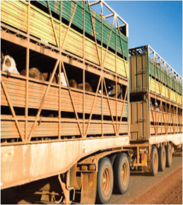
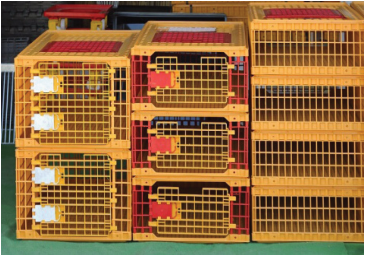
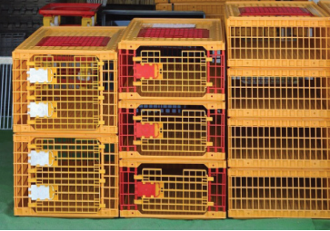

health status and minimise the risks of spreading animal diseases. It also
facilitates the control of the theft of animals.
(b) Ensuring safety for both animals and their handlers: Animals sent to
auctions or slaughterhouses must not be mistreated, as they may react in
defence against discomfort and could harm themselves or their handlers.
When animals are to be transferred at a distance for slaughter, they should
be carried in special containers, cages, and vehicles (refer to Figures 6.6
and 6.7).
(c) Ensuring comfort to the animal during transportation: Animals in transit
should be provided with adequate space for standing or resting during
transit and provided with food and water. Cattle, sheep, and goats that
are herded on foot should be trekked within allocated stock routes where
there are places for resting and clinical examination. For small animals
like rabbits and chickens transported in cages, the cages must be of a size
that shall not cause harm by squeezing or over-congestion. Chicken, for
example, is very sensitive to overcrowding and heat stress.

Figure 6.6: Crates for transporting poultry
Source:
https://www.chickensandmore.com/
wpcontent/uploads/2021/01/Chicken-Crates.jpg
Figure 6.7: Transportation of cattle
Source:
https://kb.rspca.org.au/wp-content/
uploads/2020/05/livestock-transport-hot-weather-
crop.jpg